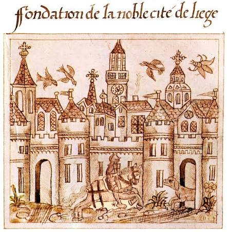

CityLoop Quest Liège


Liège médiévale se comprend par la tension entre autorité princière et libertés communales. Le Perron, devenu symbole urbain, rappelle cette culture politique. Le sac de 1468 par Charles le Téméraire reste l’un des traumatismes majeurs de la mémoire locale, même si la ville se relève et recompose son identité.
L’époque moderne voit la principauté se transformer, construire, embellir et négocier sa place entre grandes puissances. Le palais des Princes-Évêques, les collégiales, les couvents et les hôtels particuliers témoignent d’une ville à la fois religieuse, administrative et commerçante.
La Révolution liégeoise puis la période française bouleversent l’ancien monde. La cathédrale Saint-Lambert disparaît, les institutions changent, les usages des bâtiments se déplacent. Au XIXe siècle, Liège devient aussi une ville industrielle, universitaire et ferroviaire, portée par le fer, le charbon, le zinc et les innovations.
Le XXe siècle apporte guerres, destructions, modernisations et grands équipements. La gare des Guillemins, la transformation de La Boverie, la Cité Miroir ou les nouveaux espaces piétons montrent une ville qui continue de se réinventer sans renoncer à son tempérament ardent.